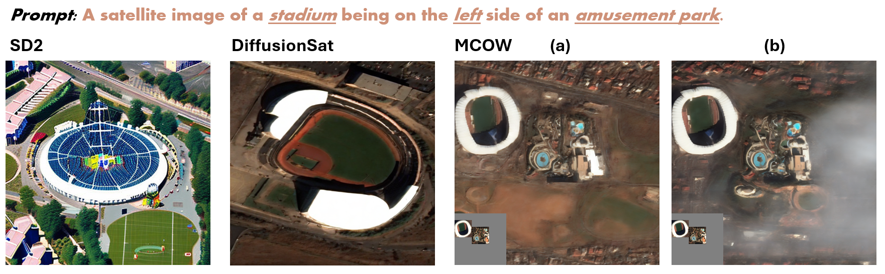

The proposed framework MCOW generates subjects independently and then composes them together to address attribute-binding, object-relation, object missing and numeracy problems. We observe that cyclicly inject the subject latents obtained by DDIM Inversion during the compositional generating process can effectively compose subjects. Also, current image generation on a single subject are always attribute-correct. Based on these two points, We propose MCOW (Multi-subjects Cyclic-One-Way Diffusion), a training-free diffuison-based framework to solve compositional image generation challenges.
We show that MCOW outperforms other models on various compositional challenges in T2i-CompBench. We also find that its training-free framework will benefit domain-specific models such as satellite image generation.
The training-free framework allows MCOW to be transferred to the generative model of specdic domains. Here is an example for satellite imagery generation.
Left: traditional generative models such as SD2 exhibit limitations in generating high-quality satellite imagery. Mid: DiffusionSat tailored for this domain struggles with compositional generation. Right: applying MCOW framework on DiffusionSat successfully overcomes these challenges and demonstrates superior performance in compositional satellite image synthesis.